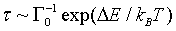
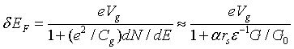
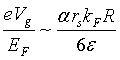
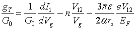

International Journal of Theoretical and Applied Nanotechnology (IJTAN)
ISSN: 1929-1248

Volume 1, Issue 1, Year 2012 - Pages 30-37
DOI: 10.11159/ijtan.2012.005
A Nano-Transistor Based on Gate-Induced Thermal Switching
Jérôme Bürki¹, Charles A. Stafford², Daniel L. Stein³
Department of Physics and Astronomy, Sacramento State University, 6000 J Street, Sacramento, CA 95819, USA
buerki@csus.edu
Department of Physics, University of Arizona,1118 E. Fourth Street, Tucson, AZ 85721, USA
stafford@physics.arizona.edu
Department of Physics and Courant Institute of Mathematical Sciences,New York University,New York, NY 10003, USA
daniel.stein@nyu.edu
Abstract - A nanoscale device consisting of a metal nanowire, a dielectric, and a gate is proposed. A combination of quantum and thermal stochastic effects enables the device to have multiple functionalities, serving alternately as a transistor, a variable resistor, or a simple resistive element with changeable I-V characteristics. By manipulating the gate voltage, stochastic transitions between different conducting states of the nanowire can be induced, with a switching time as short as picoseconds. With an appropriate choice of dielectric, the transconductance of the device can significantly exceed the conductance quantum, a remarkable figure of merit for a device at this lengthscale.
Keywords: Nanoscale, Transistor, Variable resistor, Thermal switching, Magic radii
© Copyright 2015 Authors This is an Open Access article published under the Creative Commons Attribution License terms. Unrestricted use, distribution, and reproduction in any medium are permitted, provided the original work is properly cited.
1. Introduction
Variable resistors are common circuit elements in many electronic applications. However, their large size and slow response time have limited their use primarily to the human-circuit interface. In this article, we describe how the exploitation of quantum and stochastic effects at the nanoscale (Bürki and Stafford, 2005) allows one to combine what would ordinarily be distinct macroscale circuit elements into a single nanoscale device with multiple functionalities, and to achieve response times that can theoretically be down to the order of picoseconds.
The device architecture we propose is illustrated schematically in Fig. 1: A metal nanowire is the active circuit element, and is embedded in a dielectric sheath, surrounded by a gate of comparable dimensions. The physics behind its operation is the following: A voltage applied to the gate modifies the density of carriers in the nanowire, resulting in a shift of the electronic Fermi energy EF. This alters the electron-shell structure of the nanowire (Urban et al., 2003, 2004, 2006 and Bürki and Stafford, 2005), which in turn changes the energy barriers that determine the rates of stochastic transitions (Maier and Stein, 2001, and Bürki et al., 2005) between different structural states of the nanowire. The idea is that a sufficient voltage applied at the gate will make the energy barrier small enough to be comparable to the thermal energy kBT, thus making a stochastic transition all but certain.
A nanoelectromechanical switch similar to the device we propose has recently been built by Martin et al. (2009) on a somewhat larger scale. However, the larger scale of their device results in a different physical process responsible for the switching. Martin et al. argue that the switching in their device is the result of a bending of the wire due to an electrostatic attraction between the wire and the gate. Such bending would be negligible in the device we envision, which would be much shorter (few nm as opposed to close to a µm in Martin et al. (2009), and the switching would be instead driven by stochastic events as described above. The different scales, configurations, and physics underlying the operation of the two lead to different device characteristics and functionalities; we'll review these at the end of this article.
2. Background Information
Metal nanowires have attracted considerable interest in the past decade due to their remarkable transport and structural properties. In particular, they exhibit striking correlations between their stability and electrical conductance (Rubio et al., 1996, Urban et al., 2004b, Mares et al., 2007). An extensive review of their properties has been written by Agraït et al. (2003).
Because most atoms in a nanowire are at the surface, with low coordination numbers, metal nanowires behave essentially like fluids (Kassubek et al., 2001, Zhang et al., 2003). Classically, the Rayleigh instability would thus break up any wire whose length exceeds its circumference (Kassubek et al., 2001). Nevertheless, nanowires clearly violating the Rayleigh criterion have been observed repeatedly. In particular, long gold and silver nanowires were observed to form spontaneously under electron irradiation (Kondo and Takayanagi, 1997, Rodrigues et al., 2002, Oshima et al., 2003), and appear to be surprisingly stable. Even the thinnest gold wires, essentially chains of atoms, have lifetimes of the order of seconds at room temperature (Smit et al., 2004).
That these filamentary structures are stable at all thus appears counterintuitive, but is explained (Yanson et al., 1999, 2001, Kassubek et al., 2001, Zhang et al., 2003, and Bürki et al., 2003) by electron-shell effects similar to those well-known in metallic clusters (de Heer, 1993). The instability is suppressed through quantum effects, with stabilization occurring through the nanowire's electronic shell structure, as described by the nanoscale free electron model and its extensions (Stafford et al., 1997, Bürki et al., 2005). A quantum linear stability analysis (Kassubek et al., 2001, Urban et al., 2003, 2004a, 2006) showed the existence of "islands of stability" for discrete intervals of the radius . These correspond to conductance "magic numbers" that agree with a subset of those observed in experiments, referred to as electronic shells (Urban et al., 2004b, Mares et al., 2007). For low enough temperatures, there remain finite regions of R stable against long-wavelength perturbations. Therefore, stable wires exist only in the vicinity of certain "magic radii" which correspond to quantized conductance values that are integer multiples of the conductance quantum G0 = 2e2 / h . Note that the NFEM is a continuous model and therefore cannot describe the second subset of stable wires, or "atomic shells" that are observed experimentally since those are stabilized by the atomic structure of the wire (Mares et al., 2007). These atomic shells seem to occur in slightly thicker wires, with conductances usually above 40G0 , and therefore don't come into play when one considers only wires with conductances below that limit.
The linear stability analysis described above ignores large thermal fluctuations that can lead to breakup of the wire. Nanowire lifetimes are inferred from conductance histograms, compiled by cycling a mechanically-controllable break junction (MCBJ) thousands of times (Yanson et al., 1998, 1999, 2000, 2001). These studies indicate that conductance peaks disappear above fairly well-defined temperatures, suggesting a lifetime at that temperature that is comparable to a typical wire-elongation time in the experiment. Bürki, Stafford and Stein (2005) studied the lifetimes of these nanowires using techniques developed by Maier and Stein (2001). By modeling thermal fluctuations through stochastic Ginzburg-Landau classical field theories, they constructed a self-consistent approach to the fluctuation-induced "necking" of nanowires that is in good agreement with experiment (Bürki et al., 2005, 2006). Their theory indicates that passivated noble metal nanowires are sufficiently stable at room temperature to serve as interconnects between nanoscale circuit elements.
Of particular interest for the applications considered in this proposal is the nature of the barriers separating wires of different magic radii (and hence quantized conductances). These barriers can be surmounted in several ways: among them are raising the temperature, applying strain, shortening the wire, or changing the Fermi energy. The first three are discussed in Bürki et al. (2005, 2006), but the last is new to this paper. For the purposes of a new nanoscale device, the first two may be unsatisfactory for various reasons having to do either with nonoptimal operating conditions (temperature), or probable inability to implement these controls on the nanoscale (strain).
The proposed device requires as active element a nanowire where electron-shell effects dominate over atomic-shell effects (Mares et al., 2004). This has been shown (Urban et al., 2004b) to be the case for wires of conductance between a few and about a hundred conductance quanta for monovalent metals. Such nanowires with lengths below or around a few nanometers have been fabricated using various techniques, including scanning tunneling microscopy (STM, Agraït et al., 1993, Rubio et al., 1996), MCBJ (Yanson et al., 1998, 1999), thin-film transmission electron microscopy (TEM, Kondo and Takayanagi, 1997, 2000), electromigration (Strachan et al., 2005), and electrochemical fabrication (He et al., 2002b). Nanowires with diameters less than a nanometer have been observed using TEM by Kondo and Takayanagi (1997) to be stable under low electron beam intensities for the duration of observation.
Stochastic switching between different conductance values has been observed in contacts made using MCBJ (Krans et al., 1996), while controllable switching has been achieved recently using electromigration to grow or shrink a nanobridge between two wires (Terabe et al., 2005). Structural thinning of gold nanowire has been observed in TEM experiments (Oshima et al., 2003) to proceed step by step by successive formation of a structural step (corresponding to a change in radius of the order one atomic diameter) at one end of the wire and its subsequent propagation along the wire. Note that a similar process is described by the theory of Bürki (2005, see also Bürki and Stafford, 2007).
3. Theoretical Model
The magic radii mentioned above are the minima of the electron-shell potential (Bürki et al., 2003, shown in Fig. 2, which depends on the dimensionless parameter kFR, with kF the Fermi wavevector and R the wire radius. A shift in kF is thus analogous to applying strain, and can be used to induce rapid (i.e., on the scale of the Debye frequency) transitions between neighboring magic radii. These have conductances differing by nG0 where n≥2 is an integer (see Fig. 2; as a rule of thumb, the jumps scale as n∼(π / 4 )kFR for a wire with initial radius R.) The switching time between two adjacent magic radii was shown (Bürki et al., 2005) to be given by the Kramers formula
|
 |
(1) |
where ΔE is the energy barrier, kB is Boltzmann's constant, and T is the temperature. The rate prefactor Γ0, of order the Debye frequency, was calculated explicitly in Bürki et al. (2005). The dependence of ΔE on the parameter kFR is illustrated in Fig. 3.
The possibility of shifting EF (which is related to kF) electrostatically, as described above, depends in an essential way on the crucial feature that the nanowire has a radius of order nanometers, and thus has a very low density of states at EF. As a function of the applied gate voltage Vg, the shift in EF is
|
 |
(2) |
where Cg is the mutual capacitance between gate and nanowire, dN / dE is the density of states of the nanowire at EF. As discussed in Kassubek et al. (1999), the denominator in the first part of Eq. (2) can be well approximated in terms of material and geometrical parameters, yielding the rule-of-thumb estimate of Eq. (2), where rS is the Fermi gas parameter for the nanowire material (essentially the mean inter-electron separation in the bulk metal), ε is the mean dielectric constant of the dielectric sheath, and α is a dimensionless parameter of order unity, which depends logarithmically on the device dimensions.
In order to achieve the maximum switching speed, it is necessary to achieve a shift δ(kFR)∼1 in the shell-potential parameter. From Eq.(2), this implies a preferred operating gate voltage
|
 |
(3) |
For typical metals, rs ~ 2-3 , while kFR ~ 10 in the domain of validity of the nanoscale free electron model (Stafford et al., 1997, Bürki and Stafford, 2005). It is therefore desirable to use a dielectric with ε≥10 to minimize the necessary gate voltages.
3. 1. Transconductance
Because the mechanical switching time of the nanoscale variable resistor can be as short as picoseconds, it may also be thought of as an electromechanical transistor. It is thus useful to compute its transconductance, which for a device bias voltage V12, can be estimated as
|
 |
(4) |
where Eq. (3) and n∼(π / 4 )kFR are used to obtain the second approximation.
For large dielectric constants ε≥10, and bias voltages V12∼1V, one can thus achieve gT»G0, an exceptional figure of merit for a nanoscale device (Cardamone et al., 2006), thereby enabling its advantageous use as an effective transistor. In addition to the structural switching time of order picoseconds, the electrical RC rise time τ = Cg/G can be estimated to be of order 1 femtosecond for optimal device dimensions/materials, and so is not a limiting factor in device performance.
3. 2. Ohmic → non-Ohmic transition
The device discussed above is one where barriers are controlled by shifting the Fermi energy of the nanowire through electrostatic means. Another possibility is to change the wire length. In Bürki and Stafford (2005), it was predicted that a transition in activation behavior occurs as a function of wire length: below a critical length Lc, the barrier decreases rapidly with length, while above it is roughly constant. The transition can be continuous (second-order) or discontinuous (first-order) (see Fig. 4). This effect may have already been observed: a recent study (Yoshida et al., 2005) reported a transition from linear to nonlinear I-V behavior in gold nanowires, as distance between electrodes shortened due to an applied bias (presumably because of thermal expansion of the electrodes). In a Comment (Bürki et al., 2006), we were able to explain this change in I-V behavior as a consequence of the transition in radius stability as a function of wire length (cf. Fig. 5).
This suggests another device possibility, namely one where the wire length can be shortened below its critical value directly by increasing the applied voltage. This would convert a wire with linear I-V characteristics to one with nonlinear ones (see Fig. 5). At the present time, it remains unclear how easily controllable such a transition might be and whether it would be reversible.
4. Device Realizations
Construction of a nanoscale variable resistor/electromechanical transistor in the laboratory will require combining the three components of the device―metal nanowire, dielectric, and gate―in a single nanostructure, which will obviously be a challenge. Here we propose two potential ways to achieve this.
To achieve optimal device characteristics, the space between the active segment of the nanowire and the gate should be filled with a dielectric with ε≥10. If a solid dielectric (only) is used, a small gap around the active segment of the nanowire must be provided (see Fig. 7) to permit the nanowire surface to fluctuate freely. In that case, the mean dielectric constant of the region between the nanowire and the gate should exceed ten. The material should be chosen so that the semiconducting energy gap exceeds the maximum desired voltage difference between the gate and nanowire.
A liquid dielectric or combination of solid and liquid dielectrics could also be utilized. This would allow for optimal filling of the dielectric region, while still permitting free motion of the nanowire surface. Liquid dielectrics have been used in conjunction with some of the previous techniques (Xu et al., 2002, He et al., 2002a, b), in the context of single molecule measurements, as well as for STM measurements of metal contact transport. In the latter context, they have been shown to have little influence on the stability and transport properties of the nanocontact (He et al., 2002a).
Realization 1: In a first possible architecture for the proposed device (see Fig. 6), a layer of solid dielectric is deposited on a substrate prepatterned (using standard vapor deposition techniques) with a metallic gate to address the nanowire device. A metal nanowire several tens of nanometers in diameter with a "notch" or constriction at the desired location is then deposited on the surface of the dielectric, in alignment with the submerged gate electrode. The nanowire at the notch can then be thinned down to the specified operating diameter by electromigration, scanning-electron microscopy (SEM), or chemical etching. A nanodroplet of liquid dielectric is then deposited on the surface of the wafer, immersing the nanowire device (see Fig. 6). The nanowire device, together with the droplet of liquid dielectric, is then hermetically sealed, e.g., with an epoxy seal.
Realization 2: In another realization of the proposed device (see Fig. 7), a layer of solid dielectric is deposited on a substrate prepatterned with a metallic gate to address the nanowire device, as in the first realization. A metal nanowire of uniform diameter several tens of nanometers is then deposited on the surface of the dielectric, in alignment with the submerged gate electrode. A further layer of solid dielectric is then deposited, fully encasing the nanowire. A nanoscale pit or cavity is then etched in the dielectric layer, exposing the active segment of the nanowire. The exposed segment of the nanowire is then thinned down to the specified diameter (of order one nanometer) via e.g., focused SEM, chemical etching, or electromigration, or a combination of these techniques. A hermetic seal can be applied to increase the durability of the nanowire device. The pit containing the nanowire (see Fig. 7b) can also be filled with a liquid or gel dielectric before the seal is applied, to enhance device performance.
5. Discussion
The nanoscale free electron model used to predict the features of the device proposed here is a simplified model of metallic nanowires. As such, it has some limitations to its applicability, some of which we want to discuss now.
First, the NFEM replaces the ionic cores of the atoms by a continuous background of positive charge (Jellium, see Brack, 1993). As a result, it cannot describe any properties dominated by the atomic structure of the wires, such as the observed atomic shell sequence of stable wires (Mares et al., 2007). However, experiments have shown that wires with conductance below about 40G0 are dominated by electronic shell structures, and thus well described within the NFEM.
Other classes of models, such as molecular dynamics (MD) simulations concentrate on the atomic structure of nanowires but are not able to describe the effects we discuss here. Some MD simulations are classical (Landman et al., 1996, Todorov and Sutton, 1996) and therefore unable to describe the quantum effects critical to the function of our device, while quantum MD simulations (Nakamura et al., 1999) are restricted to such small systems that they cannot possibly describe a device like the one we propose. In addition, MD simulations are restricted to very short simulation times, and can therefore not address the stability of the system or switching of the device.
Second, the NFEM is a free electron model and is therefore restricted to metals that have a nearly spherical Fermi surface in the extended Brillouin zone. This includes monovalent metals with an s orbital, such as alkali metals which are the prototype of the material described by the NFEM, but the model has been shown to give a very reasonable description of other metals like Au (Stafford et al., 1997, Urban et al., 2004b). The model even had some success describing the non-monovalent metal Aluminum (Mares et al, 2007). In addition, it should be emphasized that any conductor where the Fermi wavelength of the electrons is comparable to the diameter of the wire is expected to be subject to the same quantum-size effects described in the NFEM, and thus exhibit at least some of the features necessary for the function of the nano-transistor described here.
In summary, we have proposed a nanoscale device that exploits the new physics that emerges at the boundary between classical and quantum physics. A monovalent metallic nanowire is stable at certain "magic radii" (Bürki et al., 2003), corresponding to a subset of quantized conductances nG0, with n integer. The nanometer lengthscale of these systems leads to low energy barriers between different conductances that are surmountable through classical thermal fluctuations on short timescales. The barriers themselves are functions of both the wire's material parameters―for example, electron density of states―and wire geometry, and as such are controllable through external manipulation. This leads to a novel situation where a basic wire configuration can perform multiple functions that on the macroscopic scale require different specially designed electronic components.
The configuration of the device―a metal nanowire embedded in a dielectric sheath surrounded by a gate―is simple. Changing the gate voltage alters the density of carriers, which in turn allows sensitive control of the energy barriers that determine the rates of stochastic transitions between different conducting states of the nanowire (Bürki et al., 2005). The device can alternatively serve as a simple resistive element, as a variable resistor, or as an electromechanical transistor, given a switching time that can be of the order of picoseconds. Note that this switching time is evaluated within the NFEM and should be seen as lower limit since the motion of atoms in not included in the model.
A further possibility, though one that may be more difficult to control, is using external voltage to change between linear and nonlinear I-V responses, through a transition in activation behaviors as noted in (Bürki et al., 2006). The device has some similarities with one built by Martin et al. (2009), but there are important differences. The latter, which is realized on the μ m rather than the nm lengthscale, depends on a mechanical process (wire bending) for its operation, leading to a slower response which effectively reduces the array of functionalities of the device. On the other hand, the device of Martin et al. (2009) can serve as an on-off switch, whereas the device discussed here can change only between different nonzero conductances. The two devices are therefore best viewed as complementary, with each specialized to different but useful functions.
Acknowledgements
This work was supported by NSF Grant Nos. 0312028 (CAS), and PHY-0651077 and PHY-0965015 (DLS). Part of this work was done when CAS and DLS were at the Aspen Center for Physics, and JB was at the University of Arizona. The authors acknowledge the hospitality of the Santa Fe Institute where the last stages of this work were completed.
References
Agraït, N., Rodrigo, J. G., Vieira S. (1993). Conductance steps and quantization in atomic-size contacts. Physical Review B, 47, 12345-12348. View Article
Agraït, N., Levy Yeyati, A., van Ruitenbeek J. M. (2003). Quantum properties of atomic-sized conductors. Physics Report., 377, 81-279. View Article
Brack, M. (1993), The physics of simple metal clusters: self-consistent jellium model and semiclassical approaches. Reviews of Modern Physics 65, 677-732. View Article
Bürki, J., Goldstein, R. E., Stafford, C. A. (2003). Quantum necking in stressed metallic nanowires. Physical Review Letters, 91, 254501. View Article
Bürki, J., Stafford, C. A., Stein, D. L. (2005). Theory of metastability in simple metal nanowires. Physical Review Letters, 95, 090601. View Article
Bürki, J., Stafford, C. A. (2005). On the stability and structural dynamics of metal nanowires. Applied Physics A, 81, 1519-1525. View Article
Bürki, J., Stafford, C. A., Stein, D. L. (2006). Comment on `Nonlinear current-voltage curves of gold quantum point contacts'. Applied Physics Letter, 88, 166101. View Article
Bürki, J. (2007). Discrete thinning dynamics in a continuum model of metallic nanowires. Physical Review B, 75, 205435. View Article
Cardamone, D. M., Stafford, C. A., Mazumdar, S. (2006). Controlling quantum transport through a single molecule. Nano Letters, 6, 2422. View Article
De Heer, W. A. (1993), The physics of simple metal clusters: experimental aspects and simple models. Review Modern Physics, 65, 611-676. View Article
He, H. X., Shu C., Li, C. Z., Tao, N. J. (2002a). Adsorbate effect on the mechanical stability of atomically thin metallic wires. Journal Electroanalytical Chemistry, 522, 26-32. View Article
He, H. X., Boussaad, S., Xu, B. Q., Li, C. Z., Tao N. J. (2002b). Electromechanical fabrication of atomically thin metallic wires and electrodes separated with molecular-scale gaps. Journal Electroanalytical Chemistry, 522, 167-172. View Article
Kassubek, F., Stafford, C. A., Grabert, H. (1999). Force, charge, and conductance of an ideal metallic nanowire. Physical Review B, 59, 7560-7574. View Article
Kassubek, F., Stafford, C. A., Grabert, H., Goldstein, R. E. (2001). Quantum suppression of the Rayleigh instability in nanowires. Nonlinearity, 14, 167-177. View Article
Kondo, Y., Takayanagi, K. (1997). Gold nanobridge stabilized by surface structure. Physical Review Letter, 79, 3455-3458. View Article
Kondo, Y., Takayanagi, K. (2000). Synthesis and characterization of helical multi-shell gold nanowires. Science, 289, 606-608. View Article
Krans, J. M., van Ruitenbeek, J. M., de Jongh, L. J. (1996). Atomic structure and quantized conductance in metal point contacts. Physica B, 218, 228-233. View Article
Landman, U., Luedtke, W. D., Salisbury, B. E., Whetten, R. L. (1996). Reversible Manipulations of Room Temperature Mechanical and Quantum Transport Properties in Nanowire Junctions. Physical Review Letter 77, 1362-1365. View Article
Maier, R. S., Stein, D. L. (2001). Droplet nucleation and domain wall motion in a bounded interval. Physical Review Letter, 87, 270601. View Article
Mares, A. I., Otte, A. F., Smit, R. H. M., van Ruitenbeek, J. M. (2004). Observation of electronic and atomic shell effects in gold nanowires. Physical Review B, 70, 073401. View Article
Mares, A. I., Urban, D. F., Bürki, J., Grabert, H., Stafford, C. A., van Ruitenbeek J. M. (2007). Electronic and atomic shell structure in aluminum nanowires. Nanotechnology, 75, 265403. View Article
Martin, C. A., Smit, R. H. M., van der Zant, H. S. J., van Ruitenbeek, J. M. (2009). A nanoelectromechanical single-atom switch. Nano Letters, 9, 2940-2945. View Article
Nakamura, A., Brandbyge, M., Hansen, L. B., Jacobsen, K. W. (1999). Density Functional Simulation of a Breaking Nanowire. Physical Review Letter 82, 1538-1541. View Article
Rodrigues, V., Bettini, J., Rocha, A. R., Rega, L. G. C., Ugarte, D. (2002). Quantum conductance in silver nanowires: Correlation between atomic structure and transport properties. Physical Review B, 65, 153402. View Article
Rubio, G., Agraït, N., Vieira, S. (1996). Atomic-sized metallic contacts: mechanical properties and electronic transport. Physical Review Letter, 76, 2302-2305. View Article
Smit, R. H. M., Untiedt, C., van Ruitenbeek, J. M. (2004). High-bias stability of monatomic chains. Nanotech., 15, S472. View Article
Stafford, C. A., Baeriswyl, D., Bürki, J. (1997). Jellium model of metallic nanocohesion. Physical Review Letter, 79, 2863-2866. View Article
Strachan, D. R., Smith, D. E., Johnston, D. E., Park, T. H., Therien M. J., Bonnell D. A., Johnson A. T. (2005). Controlled fabrication of nanogaps in ambient environment for molecular electronics. Applied Physics Letter, 86, 043109. View Article
Terabe, K., Hasegawa, T., Nakayama, T., Aono M. (2005). Quantized conductance atomic switch. Nature, 433, 47-50. View Article
Todorov, T. N., Sutton, A. P. (1996). Force and conductance jumps in atomic-scale metallic contacts. Physical Review B 54, R14234-R14237. View Article
Urban, D. F. Grabert, H. (2003). Interplay of Rayleigh and Peierls instabilities in metallic nanowires. Physical Review Letter, 91, 256803. View Article
Urban, D. F., Bürki, J., Zhang, C. H., Stafford, C. A., Grabert, H. (2004a). Jahn-Teller distortions and the supershell effect in metal nanowires. Physical Review Letter, 93, 186403. View Article
Urban, D. F., Bürki, J., Yanson, A. I., Yanson, I. K., Stafford, C. A., van Ruitenbeek J. M., Grabert H. (2004b). Electronic shell effects and the stability of alkali nanowires. Solid State Communications., 131, 609-614. View Article
Urban, D. F., Bürki, J., Stafford, C. A., Grabert, H. (2006). Stability and symmetry breaking in metal nanowires. Physical Review B, 74, 245414.. View Article
Xu, B., Huixin, H., Tao, N. J. (2002). Controlling the conductance of atomically thin metal wires with electrochemical potential. Journal of the American Chemical Society, 124, 13568-13575. View Article
Yanson, A. I., Rubio Bollinger, G., van den Brom, H. E., Agraït, N., van Ruitenbeek, J. M. (1998). Formation and manipulation of a metallic wire of single gold atoms. Nature, 395, 783-785. View Article
Yanson, A. I., Yanson, I. K., van Ruitenbeek, J. M. (1999). Observation of shell structure in sodium nanowires. Nature, 400, 144-146. View Article
Yanson, A. I., Yanson, I. K., van Ruitenbeek, J. M. (2000). Supershell structure in alkali metal nanowires. Physical Review Letter, 84, 5832-5835. View Article
Yanson, A. I., van Ruitenbeek, J. M., Yanson, I. K. (2001). Shell effects in alkali metal nanowires. Low Temperature Physics, 27, 807-820.. View Article
Yoshida, M., Oshima, Y., Takayanagi, K. (2005). Nonlinear current-voltage curves of gold quantum point contacts. Applied Physics Letter, 87, 103104. View Article
Zhang, C. H., Kassubek, F., Stafford, C. A. (2003). Surface fluctuations and the stability of metal nanowires. Physical Review B, 68, 165414. View Article